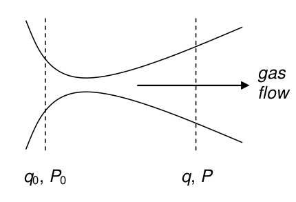

Questions 1-14¶
Q1¶
The vibrational motion of HCl is characterized by its force constant, \(k = 518 \mathrm{N m}^{-1}\), and equilibrium internuclear separation, \(r_e\) = 0.127 nm.
(a) What is the energy involved in extending the bond to 0.146 nm? This is an extension to \(\approx\) 1.146 \(r_e\) nm and is the maximum (classical) extension of the bond in the \(n = 1\) vibrational level from its equilibrium position.
(b) What fraction is this of the dissociation energy, which is \(440.2\) kJ mol\(^{-1}\)? Assume the bond extends as a harmonic oscillator and use Hooke’s law; force \(\sim\) extension or \(f = k(r - r_e)\), where \(k\) is the bond force constant. The bond extension is \(r - r_e\).
(c) Show that the energy is the same as that given by \(E_n = h\nu (n + 1/2)\).
Strategy: Energy is the integral of a force \(f\) over distance. At the classical turning point the molecule is instantaneously stationary, therefore the kinetic energy is zero and the total energy \(E\) is the same as the potential energy. The vibrational frequency is \(\displaystyle \nu = \frac{1}{2\pi} \sqrt{\frac{k}{\mu}} \mathrm{s}^{-1}\) if \(\mu\) is the reduced mass.
Q2¶
(a) Starting with the Arrhenius equation, show that \(\displaystyle \frac{d\ln(k)}{dT}=\frac{E_a}{RT^2}\).
(b) If \(k_1\) and \(k_2\) are rate coefficients at temperatures \(T_1\) and \(T_2\) respectively show that, \(\displaystyle \ln\left(\frac{k_2}{k_1}\right)=\frac{E_a}{R}\left( \frac{T_2-T_1}{T_1T_2} \right)\)
Strategy: You need to know that the Arrhenius equation is usually written as \(\displaystyle k = k_0e^{-E_a/RT}\). It is in this form in all the textbooks. Note that \(k\), the rate constant, more properly the rate coefficient, is a function of temperature and can therefore form the derivative \(dk/dT\) and that \(k_0\) is a constant and differentiates to zero.
Q3¶
Integrate the first-order rate expression, \(\displaystyle \frac{dc}{dt} = -kc\) where \(c\) is concentration, \(k\) the rate constant, and \(t\) time. Suppose that at \(t = 0\) the concentration is \(c_0\).
Q4¶
The movement of a molecule of mass \(m\) in a viscous medium, such as its solvent, is subject to Newton’s equation: force equals mass \(\times\) acceleration, or \(\displaystyle m\frac{fv}{dt}=F_{frict}\) where its velocity is \(v\) and \(F_{frict}\) is the frictional force on the molecule from the solvent and is given by Stokes’ law \(F_{frict} = -3\pi\delta\eta v\). The friction is negative because it opposes motion. The molecule’s diameter is \(\delta\), the solvent viscosity \(\eta\), which has units of \(\mathrm{kg\, m^{-1}\, s^{-1}}\). More commonly viscosity is measured in centipoise, cP, where \(1 \mathrm{cP = 10^{-3} kg \,m^{-1} \,s^{-1}}\).
(a) Find the velocity at time \(t\) if \(v = v_0\) at \(t = 0\) and show that the constants are equivalent to a time \(\displaystyle \tau = \frac{m}{3\pi\delta\eta}\). This time is the time for the molecule to ‘lose its memory’ of its previous velocity and position and is therefore a measure of how rapidly its kinetic energy is dissipated into the solvent. (See Finkelstein & Ptitsyn (2002) page 100 for an interesting discussion relating to proteins).
(b) Estimate this time for a molecule such as benzene and a protein with \(\delta = 3\) nm both in water. The density of a typical protein is \(\mathrm{1 g \,cm^{-3}}\).
Q5¶
Find $\(\displaystyle \begin{array}{lll} (a) & I =\displaystyle \int\frac{dx}{3x-2} & (b) & I=\int \cosh^2(x)dx, \\ (c) & \int \cosh(x)\sinh(x)dx, & (d) & I=\displaystyle \int\ln\left( \frac{2x^2}{1+x}\right) \\ (e) & I=\int_{-\infty}^\infty x^9e^{-ax^2}dx, & (f) & I=\int_{-1}^1 \sqrt{x-3}dx \end{array} \)$
Q6¶
Show that the integral \(\int_0^L \sin^2(xL)dx\) at large \(L\) approaches \(L/2\).
Strategy: This is a standard integral, and can be looked up in the table or converted into its exponential form and then integrated. The result should be inspected at large \(L\).
Q7¶
The acceleration f of a particle is given by the vector equation, \(f = 2\sin(\omega_0 t)\boldsymbol{ i} + cos(\omega_0 t)\boldsymbol{j} + t\boldsymbol{k}\) .
Calculate its velocity and displacement (position) at time \(t\) if the particle is at rest at the origin at time zero. If you are not familiar with the vector notation you may want to look this up in Chapter 6.3.
Strategy: If \(\boldsymbol{r}\) is position, velocity is the vector \(d\boldsymbol{r}/dt\) and acceleration \(f = d^2\boldsymbol{r}/dt^2\). The acceleration has to be integrated once to obtain the velocity and again to find the position vector. The initial conditions are that the velocity and acceleration are both zero at time \(t = 0\) and the particle is at the origin or \(\boldsymbol{r} = 0\boldsymbol{i} + 0\boldsymbol{j} + 0\boldsymbol{k}\). Each integral is really three integrals, one for each of the \(\boldsymbol{i\; j\; k}\) base vectors. Treat each integral separately and add the result.
Q8*¶
In an ideal gas \(pV = nRT\). Show that for an isothermal change \(\displaystyle \int_{V_1}^{kV_1} pdV=nRT\ln(k)\).
Strategy: As the change is isothermal, \(T\) is constant. Substitute for \(p\) and integrate.
Q9¶
5.0 m\(^{3}\) of air at atmospheric pressure (101325 Pa) is compressed adiabatically in the cylinder of an old steam engine until its volume is 10% of that originally present.
In an adiabatic process \(pV^\gamma = k\), where \(\gamma\) is the ratio of specific heat capacities \(C_p\) to \(C_V\) and is measured to be 1.404 for air, and \(k\) is a constant. In an adiabatic change no heat enters or leaves during the process, consequently the temperature must change. Also, by the first law, the work done must be equal to the change in internal energy \(U\) of the gas.
(a)Calculate the work done on the gas \(w = -\int pdt\).
(b) Calculate the instantaneous temperature rise if the engine is initially at 300 K, assuming, somewhat unrealistically, that the cylinder itself does not absorb any heat. Assume also that the air is an ideal diatomic gas with heat capacity per mole \(C_V = 5R/2\).
You will need to use \(dU = C_V dT\) where \(U\) is the internal energy and know or look up the first law of thermodynamics.
(Strictly speaking, \(C_V\) depends on temperature but you may assume that this change is small and make \(C_V\) constant. The increase in \(C_V\) of air has been measured to be only \(\approx 5 \,\mathrm{J\, K^{-1}\, mole^{1} }\) on changing the temperature from 400 to 1000 K.)
Strategy: You are given the equation with which to calculate the work done. Note that the engine compresses the gas, so the final volume is less than that of the initial, hence the upper limit of the integration must be smaller than the lower. The lower limit is always taken to be the initial value, \(V\). Because the compression is adiabatic, you must use the equation given, \(pV^\gamma = k\), rather than the ideal gas law. It is easier to do the calculation algebraically first and evaluate \(k\) afterwards using the values in the question. In the second part, calculate the work as the increase in internal energy from an initial to final temperature and knowing the work from part (a), find the final temperature.
Q10¶
(a) Calculate the work done in increasing the volume of a van der Waals gas where \((p + an^2/V^2)(V - nb) = nRT\) in which \(a\) and \(b\) are constants characteristic of the gas but independent of temperature.
(b) If the gas is chlorine then \(a = 6.343 \,\mathrm{dm^6\, bar\, mol^{-2}}\) and \(b = 0.05422 \mathrm{dm^3 \,mol^{-1}}\) and the initial volume is 20 litres. Calculate the work done in isothermally and reversibly compressing 3 moles to 1 litre.
(c) Look up and calculate the work needed to compress \(\mathrm{O_2}\) and \(\mathrm{H_2 }\) under the same conditions and then comment on the work needed to compress the van der Waals gas compared to an ideal one. The data can be found in Weast (section 6.48, 75th edition).
Q11¶
The heat capacity of \(\alpha\)-quartz (\(\mathrm{SiO_2}\)) is measured to be \(C_p = a + bT + c/T^2\) where \(a,\, b\), and \(c\) are experimentally determined constants where \(a = 46.0 \,\mathrm{J\, mol^{-1}\, K^{-1}},\; b = 0.00334 \,\mathrm{J\, mol^{-1}\, K^{-2}}\), and \(c=-8.9\cdot10^{-5}\,\mathrm{ J \,mol^{-1}\, K}\).
(a) Find the equations describing the enthalpy \(H\) and entropy \(S\) changes if
(b) Calculate the change in enthalpy and entropy between 298 and 350 K.
Q12¶
The Clapeyron equation describes the relationship between temperature and pressure of a vapour.
(a) Look up the equation in your textbook and write it in terms of \(\Delta_{vap}H\) and \(\Delta V\), then integrate the equation from pressure \(p_1 \to p_2\) and temperature \(T_1 \to T_2\) assuming \(|Delta V\) is constant.
(b) Show how the Clapeyron equation is modified to become the Clausius-Clapeyron equation.
(c) Integrate the Clausius-Clapeyron equation and show that the ratio of vapour pressures is described by \(\displaystyle \ln\left( \frac{p_2}{p_1} \right)= -\frac{\Delta_{vap} H}{R}\left( \frac{1}{T_2}-\frac{1}{T_1} \right) \) between temperatures \(T_1\) and \(T_2\). Using this equation, knowing the pressure at one temperature, the pressure can be found at any other. This is illustrated in the next problem.
Q13¶
Given the following data, use Python to calculate and plot the phase diagram for benzene near the triple point from \(T\) = 250 - 300 K and \(p\) = 0 - 10 000 Pa. At the triple point \(p\) = 36 torr and \(T = 5.5 \mathrm{^{o}C},\, \Delta_{fus}H = +10.6 \,\mathrm{kJ\, mol^{-1}}\), \(\Delta_{vap}H = +30.8 \,\mathrm{kJ \,mol^{-1}}, \rho (solid) = 0.891\, \mathrm{g \,cm^{-3}}, \rho(liquid) = 0.879\,\mathrm{ g \,cm^{-3}}\).
The coexistence curves are described by the Clapeyron and Clausius-Clapeyron equations calculated in the previous problem. The phase diagram will show regions containing solid, vapour, and liquid separated by the lines you calculate. To obtain a phase diagram similar to that in your textbook, plot three lines on the same graph but starting and ending at different temperatures each one containing the common value that is the triple point.
Strategy: Look up a typical gas-liquid-solid phase diagram in your textbook to see what your calculation should look like. Use the equations derived in the previous question. Note that the enthalpy of sublimation is that due to fusion plus that for vaporization. The common point is the triple point therefore the fusion curve ends at this point and the melting and vaporization curves start there. One atmosphere equals 760 torr which is 101326 Pa, therefore 1 torr equals 101326/760 Pa. You may find it easier to plot the log of the pressure.
Q14¶
A tube that is pinched in the middle and used to accelerate the gases in a steam turbine, jet aircraft, or rocket engine, is called a de-Laval or convergent-divergent (‘condi’) nozzle. In physical science, it is also used as a means of cooling a jet of gas molecules down to a few degrees Kelvin when gas from high pressure is expanded into a vacuum. The profile of a de-Laval nozzle is shown in the sketch, Figure 7.

Figure 7. Sketch of the shape of the de-Laval or condi nozzle.
The fuel and air heated in a jet engine increases in velocity as it passes through the engine and by reaction on the turbine blades provides the thrust to drive the plane, boat, or train forward. The rocket engine similarly has the shape of a de-Laval nozzle whose profile decreases then increases along its length. In any turbine or rocket engine the gas is heated so quickly that this is done adiabatically (and therefore \(pV^\gamma = C\), where \(C\) is a constant) and also isentropically because the gas experiences no change in entropy. Because there is no heat loss, \(\delta q = 0\), consequently the entropy change is also zero because, under reversible conditions, \(\delta q_{rev} = TdS\). The enthalpy change (kJ/mole) from the front of the engine \(q_0\) to a value \(q\), at some point along the path, is equal to the change in kinetic energy of the gas which is moving at a speed \(u\) at that point, therefore for \(m\) g/mole of gas,
(a) By integrating the relationship \(\displaystyle \left( \frac{\partial q}{\partial p} \right)_S=V\) at constant entropy \(S\) and between inlet pressure \(p_0\) to \(p\), show that the enthalpy change is
then calculate the gas velocity.
(b) The cross-sectional area of the jet nozzle is \(\sigma\) and therefore mass of gas/second passing through is \(\sigma u m = V\mu\) where \(\mu\) is the mass flow rate in kg sec\(^{-1}\).
Using the relationship \(pV^\gamma = p_0V_0^\gamma\) rearrange this to an expression for \(V\), then obtain the jet cross section and find its minimum area that is at the throttle point.
Plot the nozzle cross section as a function of the ratio of pressure to input pressure, \(p/p_0\), and hence determine the shape of the gas profile in the jet and therefore by inference the internal profile of the engine. This should look something like that in the sketch fig 7.
(c) Show that the speed of the gas at the throttle point is that of sound;
Plot the gas velocity relative to \(u_s\) assuming constant temperature. Identify the subsonic and supersonic regions. The throttle point occurs at the minimum nozzle cross section.
Typical values of pressures and temperature in a rocket nozzle are given below, but you will only need \(\gamma\) to plot the graphs. Temperature, 3500 K, input pressure 7 MPa, exhaust pressure 0.1 MPa. Ratio of specific heats, \(\gamma= C_p /C_V\) = 1.22, molar mass \(m\) = 22.
Strategy: The fact that the entropy is constant allows \(\displaystyle \left( \frac{\partial q}{\partial p} \right)_S=V\) to be integrated but otherwise does not enter into the calculation. The expression for \(q\) is first separated by writing \(dq =\cdots\) then integrated with limits \(q,\, q_0\) and \(p, \,p_0\). The velocity is obtained via the kinetic energy expression and the cross section via the mass flow equation.